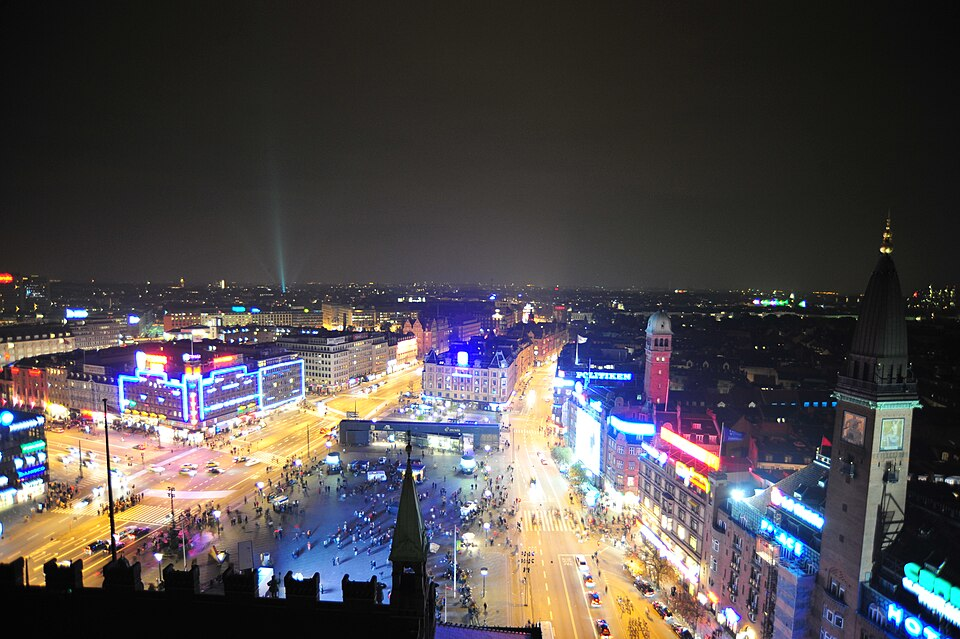
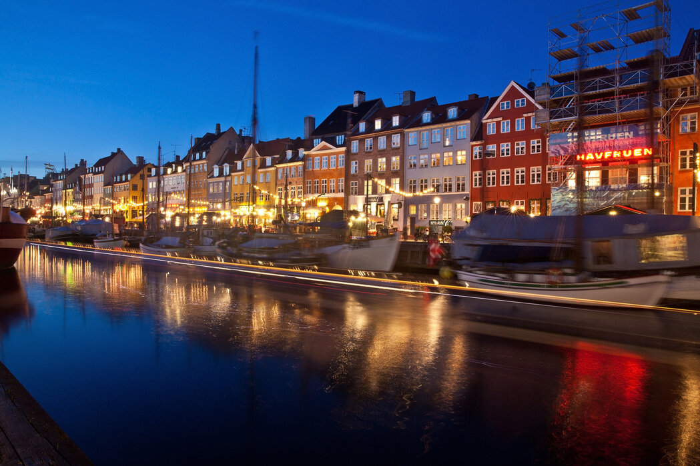
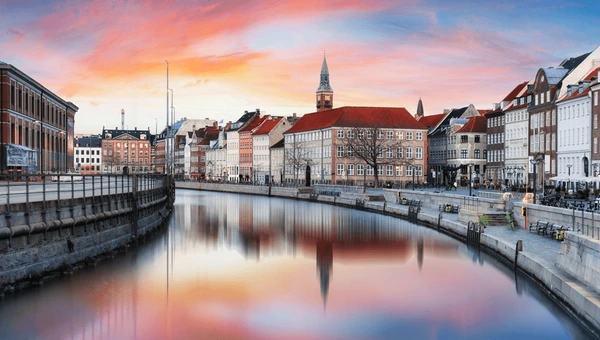

Brugerdefineret Tur
Du bestemmer ruten — vi sørger for oplevelsen.
Skræddersy Dit Eventyr

Glem de faste ruter og turistfælderne – her er det dig, der er chefen! Med vores fuldstændig brugerdefinerede tur får du maksimal frihed til at sammensætte dit eget københavnereventyr. Du vælger selv starttidspunktet, og over minimum 45 minutter kører vi præcis derhen, hvor dine drømme tager dig. Har du et specifikt museum, du vil se? En særlig arkitektonisk perle, du vil fotografere? Eller vil du bare gerne fare vild i de hyggeligste små sidegader? Fortæl os, hvad du drømmer om, så skaber vi den helt perfekte, skræddersyede oplevelse for dig!
Nattur: København Efter Midnat

Gør dig klar til at opleve København, når mørket falder på, og byen vågner på en helt ny måde! Denne magiske 30-minutters nattur starter præcis ved midnatstide (kl. 00:00) og giver dig et eksklusivt kig ind i det pulserende københavnske natteliv. Turen er 100% brugerdefineret, så uanset om du vil cruise forbi de neonlysende barer i Kødbyen, mærke den rå stemning på de sene brogader, eller blot nyde de oplyste, spejlblanke kanaler i absolut fred og ro, så bestemmer du ruten. Det er den ultimative, intense smagsprøve på Københavns natte-vibe!
Aftentur: Sunset & Dining

Skab den perfekte ramme om din aften med en skræddersyet tur i skumringstimen. Mellem kl. 18:30 og 22:30 tager vi dig med ud i den gyldne time, hvor byen emmer af hygge og romantik. Turen tager minimum 45 minutter, og du bestemmer helt selv stoppene undervejs. Som den perfekte afslutning kan du lade dig køre direkte til døren på din absolutte yndlingsrestaurant — eller lade vores lokalkendte chauffør guide dig til et af byens skjulte, gastronomiske madsteder.
Solopgangstur: Det Magiske Morgenlys

Oplev København helt for dig selv, før resten af verden vågner. Vi henter dig 15 minutter før solopgang, så vi kan fange dagens allerførste, gyldne stråler, når de rammer byens tage og vandoverflader. Over minimum 45 minutter får du en fuldstændig uforstyrret og fredfyldt oplevelse af hovedstaden, hvor gaderne er tomme, og lyset er spektakulært. Da turen er helt brugerdefineret, vælger du selv, om solen skal hilses velkommen ved Den Lille Havfrue, over Søerne eller langs Nyhavns historiske facader.
Klar til din skræddersyede oplevelse?
Fortæl os om dine ønsker, og vi skaber den perfekte tur specielt til dig.
Kontakt os